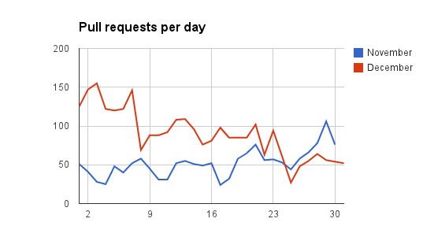

During last december, I attended to 24pullrequests.com, a project to engage people to make one pull request per day until Christmas.
After it, I want to know how much a simple gamification over a common task can improve the results. Yes, I always helped some projects with pull requests, issues, code reviews, but during 24pullrequests project, I increased my work in GitHub open source projects.
So, I used data from GitHub to understand the impact of 24pullrequests. My numbers does not match public 24pullrequests numbers, but I did it based in GitHub data and I expect it is correct (check andrew/24pullrequests#236).
First, the basic numbers:
- 2724 developers registered
- 642 developers with at least one pull request
- 2773 pull requests opened
- 1299 projects with at least one pull request
Ok, these numbers say nothing about 24pullrequests impact. Maybe people just did a lot of pull requests and 24pullrequests has nothing with it. Maybe people are creating useless pull requests just to "win" the game.
I'm sure it is not the best comparison, but I compared these data with november data. In november, all these registered developers opened 1558 pull requests to 837 projects. Each month had around 66% of pull requests merged, almost the same merge rate.

Some projects had a lot of engagement, but the first project was the 24pullrequests, with 88 pull requests.
To write these post, I calculated a lot of stats and did some graphics, but the most surprisingly numbers to me were these last one. 4 of the 10 developers with most pull requests did not created a pull request in november and only one did more than 10 pull requests. I double checked these data because I did not know I had zero pull request in november.
This last image clearly show how much 24pullrequests encouraged people to open source projects.
It is dificult to compare these data, they can have a lot of external factors, like holidays, classes and more. I can just say it was an awesome project and I really enjoyed it. Awesome work, Andrew!
There are comments.